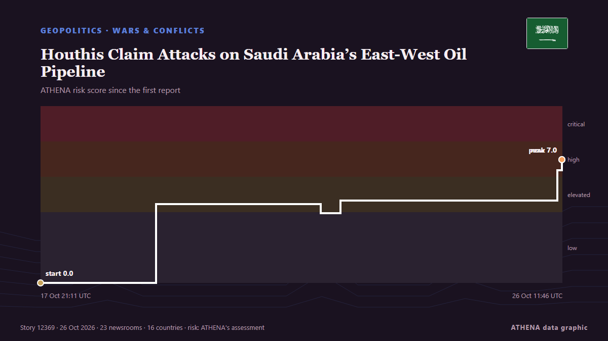

الملاحة
الملاحة والممرات البحرية اليوم
آخر 24 ساعة — الأحداث: 39، الدول: 31. أعلى خطر الآن: 5.9 — 20 civilians killed, injured in Houthi missile attack on health center in Yemen: Media.

الجغرافيا السياسيةHouthis Claim Attacks on Saudi Arabia’s East-West Oil Pipeline
The Iran-backed Houthis on Monday claimed they attacked pumping stations along Saudi Arabia’s East-West onshore oil pipeline, the Kingdom’s key crude export route bypassing the Strait of Hormuz. من OilPrice.com
| 20 أكتوبر | 13 |
|---|---|
| 21 أكتوبر | 7 |
| 22 أكتوبر | 18 |
| 23 أكتوبر | 12 |
| 24 أكتوبر | 11 |
| 25 أكتوبر | 15 |
| 26 أكتوبر | 14 |
| 27 أكتوبر | 20 |
| 28 أكتوبر | 15 |
| 29 أكتوبر | 20 |
| 30 أكتوبر | 24 |
| 31 أكتوبر | 8 |
| 1 نوفمبر | 13 |
| 2 نوفمبر | 9 |
المكتب البحري: الموانئ والطرق والحوادث →
المتابعات
الأحدث
Saudi Arabia flight update: India-bound services resume from Riyadh, Indian Embassy says
Riyadh went quiet, but Saudi airspace didn't: where flights went after the airport attacks. من Simple Flying
Egypt approves military support for Saudi Arabia after Houthi attacks escalate
Saudi Arabia is a major political, financial partner of Cairo, providing billions of dollars in aid, energy supplies. من Express Tribune
Inside Tehran talks: Iranians link Houthi de-escalation to US approval of regional truce
A day after Saudi Arabia and its two defence-pact partners sent senior officials to Tehran, sources say the clearest outcome is a promise to keep talking, not a deal to de-escalate on any front… من The National
Iran says discussing plan with mediators to end war, reopen Hormuz
A Qatari delegation visited Tehran on Sunday for talks to review developments including the latest on negotiations, Hormuz and energy supplies. من Free Malaysia Today
Iran Guards Say Halted 3 Tankers After 'Incidents' In Strait Of Hormuz
The Iran Guards did not specify the nature of the incidents, which came a day after Iran's armed forces said at least four tankers had stopped in the area after hitting mines. من NDTV
Romania blames Russia for drone that sinks cargo ship; 1 killed, 3 missing
Romania’s rescue operation recovered nine people and one deceased body from a distressed ship in the Black Sea, while three remain missing. من Arab News
Saudi says Riyadh airport partly reopens despite renewed Houthi threats
Saudi Arabia said its main airport had partially resumed operations at two terminals on Sunday despite renewed threats to target it from Yemen’s Iran-aligned Houthis, as the kingdom intercepted… من Cyprus Mail
Yemen: 75 new recruits killed in Houthi missile strike laid to rest
A mass funeral was held Wednesday for 75 new recruits killed earlier this week in a Houthi missile strike in southern Yemen that was the deadliest attack since the resurgence of fighting in the Yemen… من Africanews (English)
Houthis strike Yemen's Aden airport after evacuation warning
ADEN/DUBAI, Oct 28 - Yemen's Houthis attacked Aden airport on Wednesday, government officials said, after the Iran-aligned group warned people to evacuate the facility as fighting escalated in the… من The Straits Times
Iran says considering 2-day plan to reopen Hormuz
Tehran: Iran's foreign ministry on Monday said it was considering a two-day plan to reopen the Strait of Hormuz if the US agrees to its conditions, having previously proposed a one... من Oman Observer
Erdogan, Zelensky talk Black Sea Grain Corridor
Turkish President Recep Tayyip Erdogan and Ukrainian President Volodymyr Zelensky agreed on Saturday to continue work on the Black Sea Grain Corridor, aimed at enabling grain shipments from Ukraine. من AzerNews
Egypt, Bahrain and UAE Back Greece Over Turkey-Libya Maritime Deal
Greece gains the backing of Egypt, Bahrain and the UAE in opposing the Turkey-Libya maritime accord, as tensions over maritime boundaries and energy exploration intensify. من Greek City Times